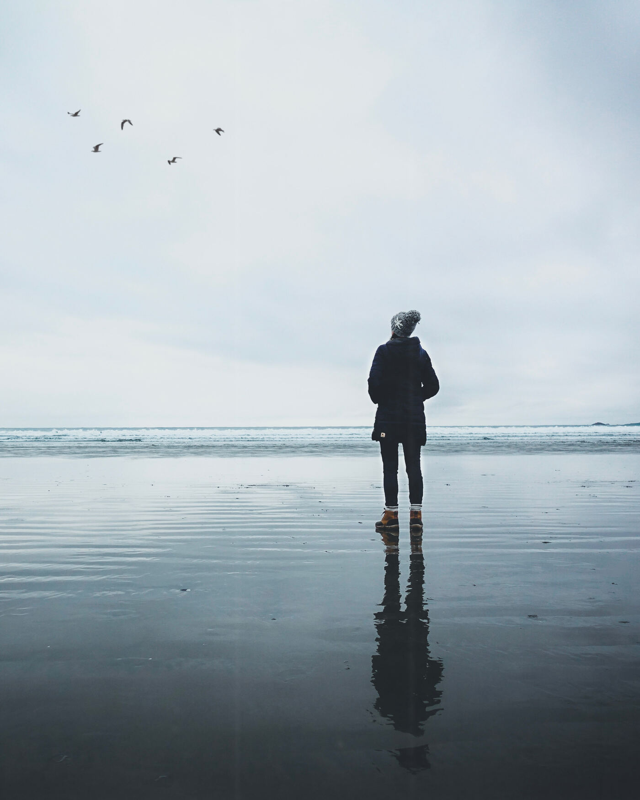
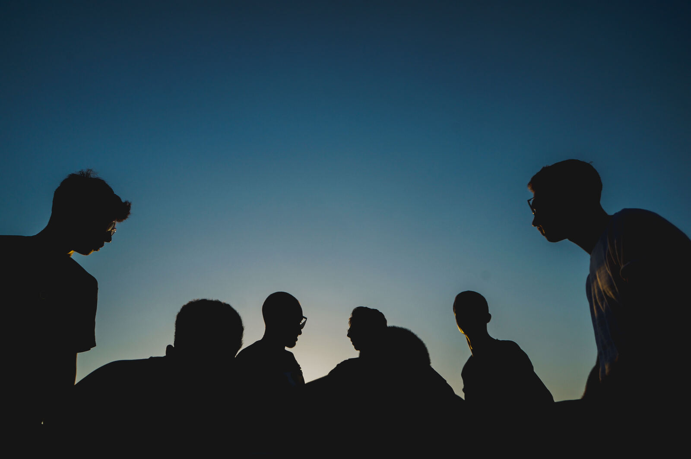
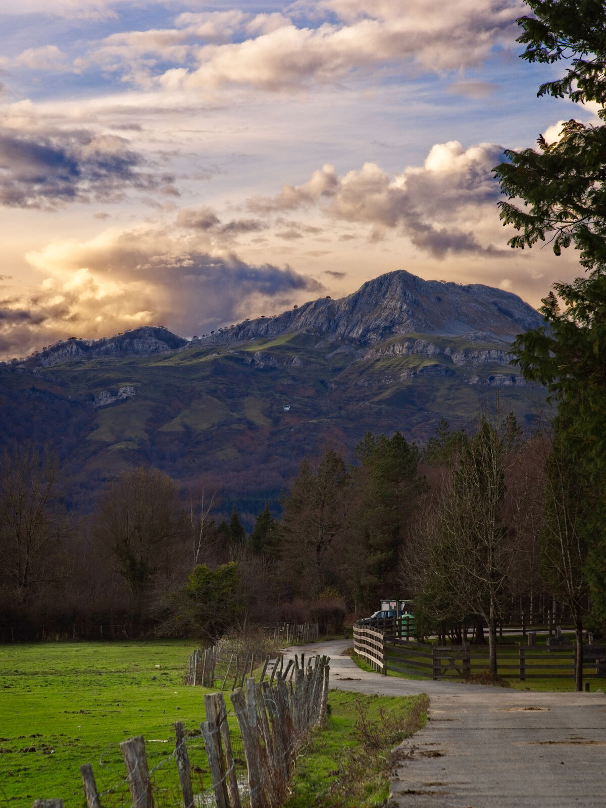

Balioak 4.0 Escape Room
35-40 minutuko esperientzia hibridoa (sarrera-bideoa + fisikoa + digitala), aula interaktiboko horma eta mahaia baliatuz, FP Euskadiko Balioak 4.0 benetan ezagutu eta barneratzeko.
Zer da Balioak 4.0?
Balioak 4.0 FP Euskadiko ikaskuntza-ereduaren lan-lerro bat da (iTlent / Talentuaren Euskal Institutua), eta helburu nagusia da balioetan oinarritutako prestakuntza heziketa-zikloetan txertatzea, ETHAZI ereduaren testuinguruan. Kontua ez da zeregin gehigarri bat sortzea, baizik eta dagoeneko egiten dena balioen ikuspegitik begiratzea, ikasleek balio horiek beren ohitura eta jarduera profesionalean modu naturalean txerta ditzaten.
Ibilbideak erantzukizunaren printzipiotik abiatzen dira — erantzukizun indibiduala erantzukizun kolektiborako bidea baita — eta handik, FP Euskadiko lau balio nagusiak lantzen dira:
Iturria: iTlent — LHko Talentuaren Euskal Institutua, "Balioak 4.0" (itlent.eus). Erantzukizuna oinarrizko printzipio gisa kokatzen da, eta gainerako lauak horren gainean eraikitzen dira.
iTlent-en jatorrizko ibilbidea: 5 zutabe
iTlent-ek argitaratutako "Balioak 4.0" liburuxka ofizialak (itlent.eus) prestakuntza-ibilbide bat proposatzen du, bost multzotan egituratua. Eszape rooma bost horiek islatzen saiatzen da, modu esperentzialean:

Pentsamendu kritiko-analitikoa lantzea eta erantzukizunaren printzipiotik abiatzea: zein naizen, nondik natorren, nora joan nahiko nukeen, zein balio behar ditudan hara heltzeko (ASMOA–IKUSPEGIA–BALIOAK eskema). Banakako erantzukizuna da erantzukizun kolektibora iristeko lehen urratsa.
Norberak bere burua ezagutzetik abiatuta, komunikazio-estrategia bat eraikitzea (personal branding), balioetara bideratuta — zintzotasuna, gardentasuna, lankidetza eta enpatia landuz.

Zentroak bultzatu nahi dituen balioak identifikatu eta lantegi praktikoetan barneratzea, elkarrizketatik abiatuta — inposatu gabe, inspiratuz eta elkarrekin sortuz.

Epe luzerako pentsamendua: gaurko erabakiek etorkizuneko belaunaldiengan duten eragina aintzat hartzea. NBEren Garapen Iraunkorrerako 17 Helburuak (GIH) gida eta inspirazio gisa erabiltzen dira.

a) Ingurumen-iraunkortasuna eta zaintza · b) Gizarte-arazoak konpontzeko prestakuntza (berdintasuna, dibertsitatea, lan-bizitza uztartzea) · c) Etika eta gobernu korporatibo egokia (zintzotasuna, gardentasuna, konfiantza).
Horiez gain, liburuxkak Zeharkako Ekintzak proposatzen ditu: boluntariotza (Espainiako VOL+ ziurtagiriaren bidez, arazoak ebazteko, ekimenerako eta talde-lanerako trebeziak egiaztatzen dituena), Master Class-ak eta enpresekiko lankidetza (Ternua, Ecoalf, Auara bezalako adibideak).
Zergatik Escape Room bat?
Escape Room bat esperientzia bat da non taldeak, denbora mugatuan, elkarlanean ibili behar duen arazoak ebazteko — hain zuzen ere, Balioak 4.0k eskatzen duen jarrera bera: erantzukizun kolektiboa, elkarren beharra, ekimena eta denen partaidetza aintzat hartzea. Formatu honek balioak bizitzea ahalbidetzen du, ez soilik azaltzea.
Formatuaren funtsa
7–8 ikasleko talde bakarra, gela bakarrean (aula interaktiboa). Ez da beste gelaz aldatu behar; estazio guztiak leku berean daude.
~35-40 minutu: 5' sarrera-bideoa + 4 × ~7-8' gela (bilaketa + kode fisikoa + galderak + jolasa) + 3-4' azken kandadua.
Estazio bakoitzak elementu FISIKOA bat du (objektua, kutxa, giltza, txartela...) eta elementu DIGITALA bat, aula interaktiboko horma edo mahaian.
Puzzle bakoitzak digitu bat ematen du. Lau digituek azken kandadua osatzen dute → kutxa nagusia (saria/ziurtagiria/hurrengo erronka).
4 jolasetatik hiruk hormaren perimetro osoa erabiltzen dute (8 postu banatuta), eta guztiek onartzen dute aldi bereko parte-hartze anitza (multitouch benetakoa): zenbat eta ikasle gehiago beren postuan, orduan eta azkarrago osatzen da jolasa — talde osoaren parte-hartzea saritzen duen diseinua, ez norbanako baten abiadura.
4 estazio + 1 azken kandadua
Betiko Escape Room baten osagai klasikoak (giltzarrapoak, kutxak, kode ezkutuak, argi beltza, puzzleak, giltza fisikoak) balio bakoitzarekin lotu dira, eta aula interaktiboko horma/mahaia estazio bakoitzaren digital-osagai gisa txertatu da.
Erronka honek fisikoki ezinezkoa da pertsona bakar batek bakarrik gainditzea: horma interaktiboko puzzlea aldi berean ukitu behar da hainbat lekutan.
- Giltzarrapo bat 4 kate ezberdinekin lotua (bakoitzak parte-hartzaile bat behar du aldi berean tira egiteko).
- Bonbila/kandela «adiskidetasun-argia»: taldekide guztiek eskua elkarren gainean jarri behar dute sentsore baten gainean piztu dadin (edo, sinpleago, presio-txartel bat 4 pisu-punturekin).
«Taldeka» jolasa (aula interaktiboko Horma Interaktiboan dagoena): 30 segundotan, taldekide ezberdinek aldi berean ukitu behar dituzte bolak — inork bakarrik ezin ditu guztiak lehertu. Puntuazio-atalasea gainditzean, kodearen 1. digitua agertzen da pantailan.
DUA (Diseinu Unibertsala Ikaskuntzarako) printzipioetan oinarritutako estazioa: informazio bera hainbat bidetatik ailegatzen da (ikusizkoa, ukimenezkoa, entzunezkoa), eta talde osoak bide guztiak konbinatu behar ditu kodea osatzeko — inor ez baztertzeko, denen ekarpena behar da.
- Braille bidez idatzitako 2 digitu, ukimenez soilik antzeman daitezkeenak (kartoi erliebedun edo Braille txantiloi inprimatuarekin).
- Audio-mezu labur bat (QR kode batetik entzuten dena) beste digitu bat esaten duena, azentu/hizkuntza ezberdinetan (euskara, gaztelania, ingelesa) — entzumenak lagunduta.
«Marraztu» jolasa: forma bat kolore-kodez ETA hitzez azaltzen da aldi berean (ez soilik ikusiz), eta taldekide guztiek txandaka marraztu behar dute, norberak ahal duen bezala — norbaitek ezin badu ikusi ondo, beste batek deskribatzen dio.
Estazio honek ez du irtenbide zuzen bakarra ematen: taldeak proposatu behar du nola gainditu erronka baliabide mugatuekin — irakasleak ez du bidea esango, taldeak asmatu behar du.
- Material-kutxa bat (soka, klip, xurgagailu, kartoia...) eta helburu bat: «eraiki zerbait X puntutik Y punturaino iristeko» — hainbat konponbide balio dute.
- Sormen-txartelak: talde barruan norbaitek ekimena hartu eta ideia bat proposatu behar du 90 segundotan.
Robot-programazio motako sekuentzia librea (dbSariak Gela 4ren logikan oinarritua): taldeak berak erabaki behar du zein bide hartu helburura iristeko, eta akatsak onartzen dira — saiatu, huts egin, berriz saiatu. Helburura iristean, 3. digitua agertzen da.
Puzzle honek fisikoki banatuta dauden piezak behar ditu: talde erdiak informazio bat du, beste erdiak beste erdia — elkarri azaldu gabe, ezin da ebatzi.
- 2 mapa/txartel-multzo osagarri (A taldeak X informazioa, B taldeak Y) — elkartuta soilik zentzua hartzen dute.
- Giltza bikoitza: bi pertsonak aldi berean biratu behar duten giltzarrapoa (bi eskuz, bi norabidetan).
«Arrastatu» jolasa parekatuta: bi taldekidek aldi berean, mahaiaren muturretatik, beren koloreko bolak elkarren laukira eraman behar dituzte — bat bestearen laguntzarik gabe ezin da osatu. Amaitzean, 4. digitua agertzen da.
Talde osoak 4 digituak (Solidaritatea → Inklusioa → Ekimena → Interdependentzia) 4 zenbakiko giltzarrapo fisiko batean sartu behar ditu (edo mahai interaktiboko «Kandadua» pantailan, dbSariak formatuan). Irekitzean, kutxa nagusia agertzen da: barruan, talde-ziurtagiria («Balioak 4.0 taldea» izendapena) eta, nahi izanez gero, sari sinboliko bat.
Ez dago hausnarketa-atalik: eszape rooma benetako proba-sekuentzia bat da hasieratik amaieraraino, ikasleek euren kabuz gainditu behar dutena.
Denbora-lerroa (35-40')
Estazioak lineala izan beharrean, 2 taldetan bana daiteke (7–8 ikasle → 2 azpitalde 3–4koak) eta aldi berean 2 estaziotan hasi, gero txandakatuz — horrela denbora optimizatzen da gela bakar batean.
Materialen zerrenda
| Estazioa | Fisikoa | Digitala |
|---|---|---|
| 1. Solidaritatea | 4 katerekin lotutako giltzarrapoa; presio-sentsoredun txartela | Horma interaktiboa — «Taldeka» jolasa |
| 2. Inklusioa | Braille txantiloia; QR + audio hiru hizkuntzatan | Mahai interaktiboa — «Marraztu» jolasa |
| 3. Ekimena | Material-kutxa (soka, klipak, kartoia...) | Horma interaktiboa — robot-sekuentzia librea |
| 4. Interdependentzia | 2 mapa osagarri; giltza bikoitza | Mahai interaktiboa — «Arrastatu» parekatua |
| Azken kandadua | 4 digituko giltzarrapo fisikoa; kutxa nagusia; ziurtagiriak | (aukeran) dbSariak formatuko kandadu digitala |
Antolatzeko checklist
- Gelako 4 txoko/mahai antolatu estazio bakoitzarentzat, eta horma/mahai interaktiboa erdian edo eskuragarri utzi.
- Horma interaktiboko «Taldeka» eta robot-sekuentzia jolasak aurrez probatu proiektorearekin.
- Mahai interaktiboko «Marraztu» eta «Arrastatu» jolasak konfiguratu.
- Giltzarrapo fisikoak digitu zuzenekin muntatu (1-2-3-4 balio-hurrenkerarekin bat etorrita).
- Braille txantiloia inprimatu eta QR audioa grabatu (3 hizkuntzatan).
- Kronometroa/tenporizadorea gelan ikusgai (35-40').
- Sarrera-bideoa proiektorean probatu eta konexioa egiaztatu (Balioak 4.0 bideoa, ~4-5').
- Kutxa nagusia prestatu (ziurtagiriak barruan).
- Talde-banaketa aurrez erabaki (7–8 ikasle → beharren arabera azpitaldeak).
Grabaketarako gidoia
Ikasleek egin beharreko pausuak agertzen dituen gidoia, tutorial/promo bideo bat grabatzeko (~3–4 minutu). Kamera-oharrak eta ahotsa (off/narrazioa edo ikasle baten ahotsa) bereizita.
Grabaketa-oharrak
- Plano orokor bat gela osoarekin hasieran eta amaieran; bitartean, close-up eskuetan (giltzarrapoak, Braillea, mahai/horma ukipenak).
- Ahotsak: ikasle bakoitzak esaldi bat esan dezake bere estazioan — ez da narratzaile bakarra behar.
- Musika/soinu-efektuak gero editatzean gehi daitezke (giltza-hots, konfeti-soinu, tik-tak).
- Bideoa gero AI erakusleiho / dbSariak / ikastetxeko webgunean partekatu daiteke, beste irakasleentzako eredu gisa.